Post-Link Recompile of an AI Engine Application |
Lab 3: Vitis IDE Flow |
Phase 1: Create a Fixed Platform from an AI Engine Application and PL Kernels¶
Launch the Vitis IDE on a new workspace,
Phase1Wkspc: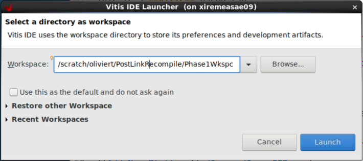
The design that will be used for the purposes of this tutorial is shown in the following block diagram:
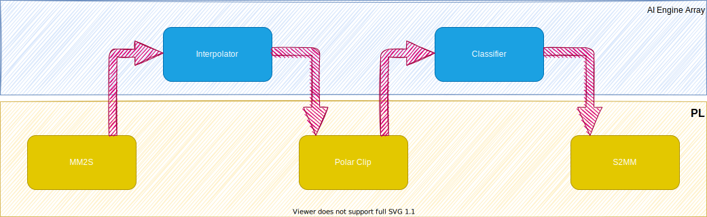
The AI Engine graph itself is composed of two kernels:
Interpolator: This kernel interpolates the input signal by 2.
Classifier: The output of this kernel is the quadrant of the input complex number.
The programmable logic is composed of three kernels:
mm2s: This kernel sends data to the AI Engine through PLIO.
PolarClip: This kernel clips the modulus of the data (complex data).
s2mm: This kernel gets data from the AI Engine through PLIO.
Now create the project, starting with the AI Engine sub-project.
From the menu bar, select File → New → Application Project. In the platform selection GUI, select the xilinx_vck190_base_202210_1 [custom]. On the next screen, specify CoSim1_AIE as the Application Project Name and CoSim1_system as the System Project Name. Ensure that the selected Processor is ai_engine.
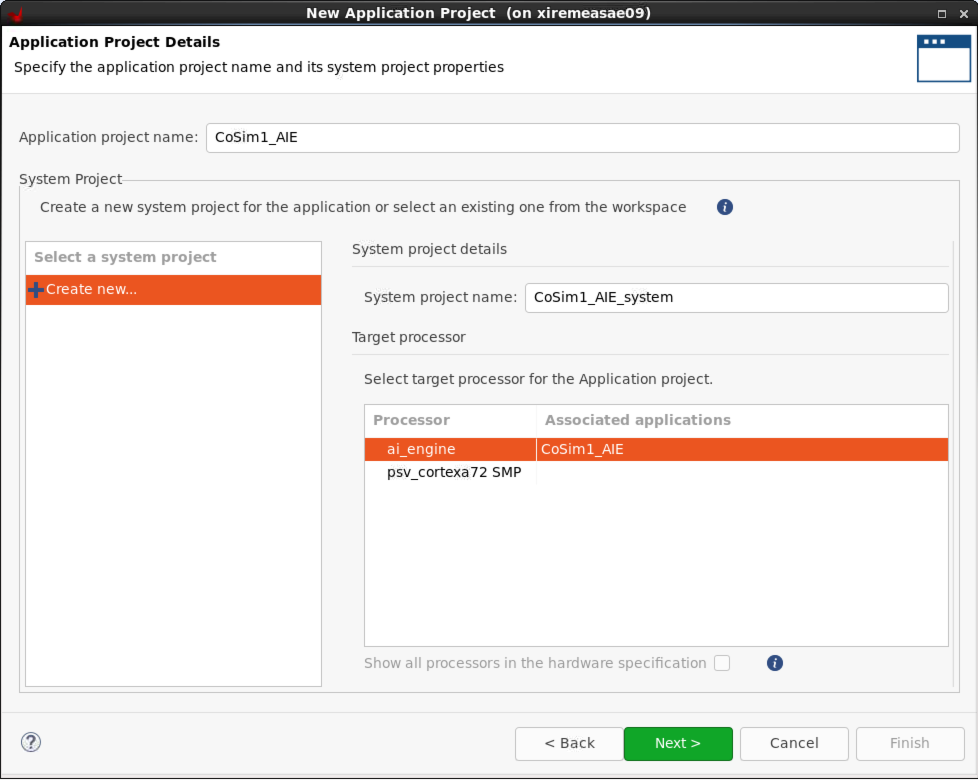
Select Empty Application in the template selection screen.
You must also include a hardware kernel project for the programmable logic part. Right-click Cosim1_system and select Add Hw Kernel Project…. Specify CoSim1_PL as the Hw Kernel Project Name.
You should now have the following project structure in the Explorer view:
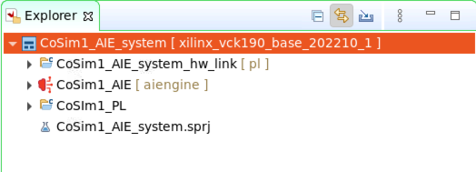
Import the source code for the AI Engine sub-project. Right-click CoSim1_AIE [aiengine] and select Import Sources…. Browse to Files and select AIE. On the following screen, check AIE and remove the trailing /src from the “Into folder:” edit area.
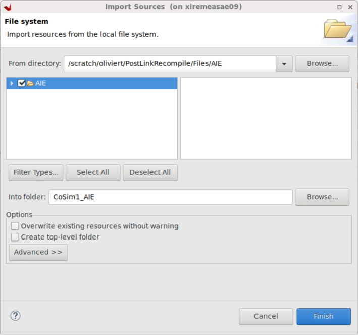
Reiterate the same operations for the CoSim1_PL sub-project and selecting the directory PL in the Files directory.
The
srcanddatafolders should be populated in the AI Engine sub-project, as well as thesrcfolder in the programmable logic sub-project: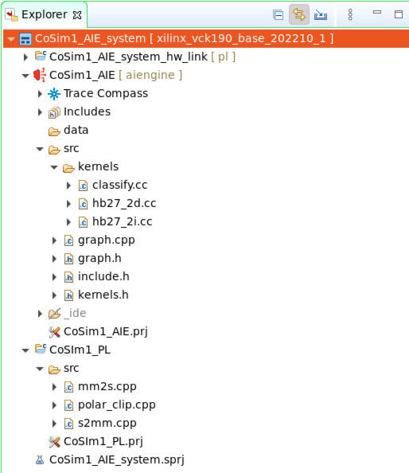
Set some parameters of the AI Engine sub-project. Right-click CoSim1_AIE [aiengine] and select C/C++ Build Settings. In the Configuration menu select [ All Configurations ].
In the Top-Level Files sub-window, click +, then click Workspace and select Cosim1_AIE/src/graph.cpp.
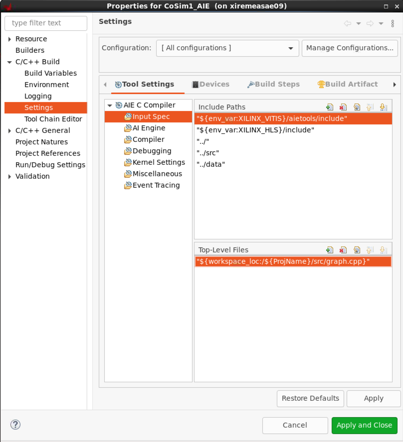
You can now compile the AI Engine project for Emulation-AIE active build configuration.
Right-click CoSim1_AIE and select Build Project….
During compile, take a look in the file
graph.hwhich contains the graph itself and the interface to the PL.When the compilation has finished, you can visualize the result by double-clicking Cosim1_system / CoSim1_AIE / Emulation-AIE / Compile Summary (graph) in the Assistant view of the IDE. Vitis Analyzer is launched and you can visualize the graph and the array placement:
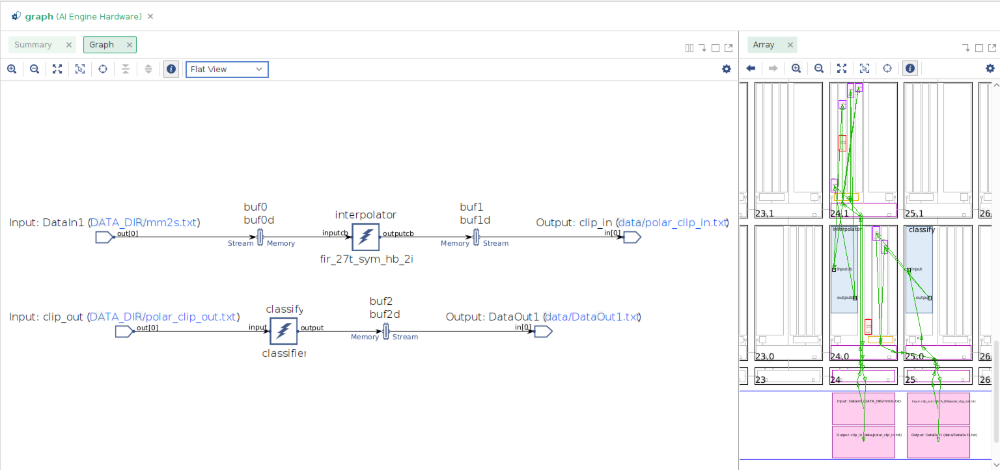
The kernels are grouped in the 24th and 25th columns of the array. The communication with the the kernel polar_clip, as well as the input data and the output data transfers, also occur in columns 24 and 25 of the array.
Open the project file Cosim1_PL/Cosim1_PL.prj. Click the lightning icon to select all the PL kernels:
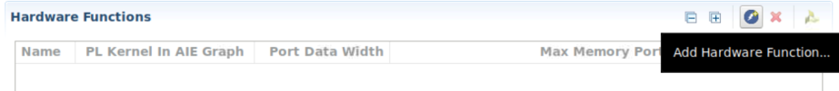
Select mm2s, polar_clip, and s2mm, then click OK.
Compile the PL kernels by right-clicking on Cosim1_PL and selecting Build Project.
When the compilation is finished, link the AI Engine domain with the programmable logic domain. This can be done in the sub-project, Cosim1_system_hw_link, that was automatically created at the beginning of this tutorial. You have to define how you want the various parts of the design to be connected together. This is the purpose of the configuration file that you will now import.
Right-click Cosim1_system_hw_link and select Import Sources…. Browse to PostLinkRecompile / Files / HwLink and click Open. Check system.cfg. For the “Into folder:” edit area, click Browse and select Cosim1_system_hw_link [pl].
In Explorer view, click Cosim1_system_hw_link [pl] / Cosim1_system_hw_link.prj to open the project file. There is one container named
binary_container_1, populated with the three kernelspolar_clip,mm2sands2mm.Click binary_container_1 to change the name to cosim_container. Right-click cosim_container and select Edit v++ options. Specify the Vitis command line options: –config ../system.cfg. Specify 0 compute units for all these PL kernels as the number and the names are specified in the
system.cfgfile.
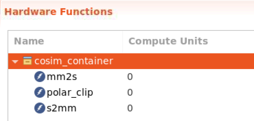
Right-click Cosim1_system_hw_link [pl] and select Build Project.
The outcome of this link stage contains a major file cosim_container.xsa which is the hardware platform specification.
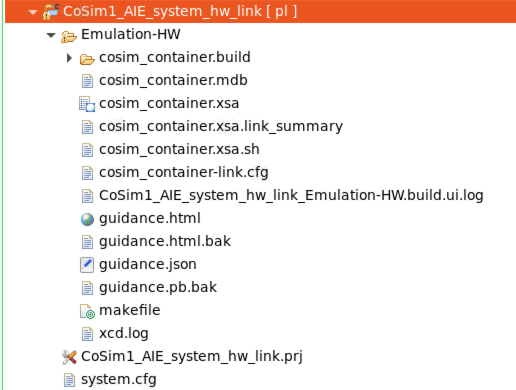
Double-click cosim_container.xsa to display the hardware platform specification. This is the address map for all IPs in the hardware platform.
Double-click cosim_container.xsa.link_summary to launch Vitis Analyzer. From here, you can visualize the system and platform diagram.
Phase 2: Use a Platform generated by V++ and modify the AI Engine Application¶
The purpose of phase 2 of this tutorial is to start from the generated hardware platform and modify the AI Engine application. To start the second phase, close the Vitis software and then start it again using another workspace, Phase2Wkspc.
Create a new application project by clicking File → New → Application Project. In the Platform Selection screen, click Create a new platform from hardware (XSA). To find the XSA file, browse to the XSA file that you generated in the previous stage: CoSim1_system_hw_link / Emulation-HW / cosim_container.xsa. Give it a new name: PostLinkPlatform.
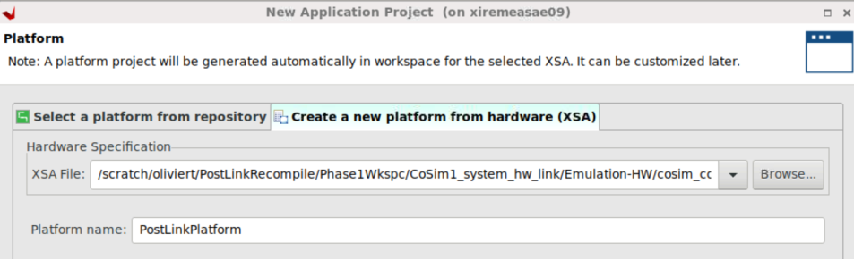
Click Next to go back to the application project creation:
Application project name: Cosim2_AIE
System project name: Cosim2_system
Processor: aiengine
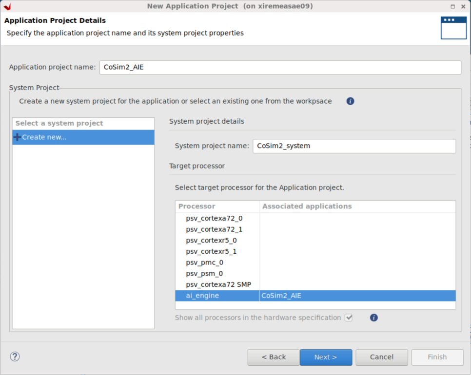
In the Explorer view, you can see two projects have been created:
CoSim2_system with the sub-project Cosim2_AIE
PostLinkPlatform
Update the AI Engine project. Import the source files in the directory
AIE2. Right-click Cosim2_AIE and select Import Sources…. Browse to PostLinkRecompile / Files / AIE2. On the next screen check AIE2 and remove the trailing /src from the “Into folder:” edit area. There is a single modification in the filegraph.h:The interpolator kernel is now constrained to be placed in the AI Engine tile column 5 row 5.
Right-click Cosim2_system → Cosim2_AIE and select C/C++ Build Settings. In the Top-Level Files window, click +, click Workspace, and select Cosim2_AIE / src / graph.cpp. Click Apply and Close.
You can now build the AI Engine project. It will start by compiling the standalone domain of the PostLinkPlatform platform and continue with the AI Engine project.
After the compilation is finished, double-click Cosim2_system / Cosim2_AIE / Emulation-AIE / Work / graph.aiecompile_summary. Vitis Analyzer is launched. Display the Graph and the Array:
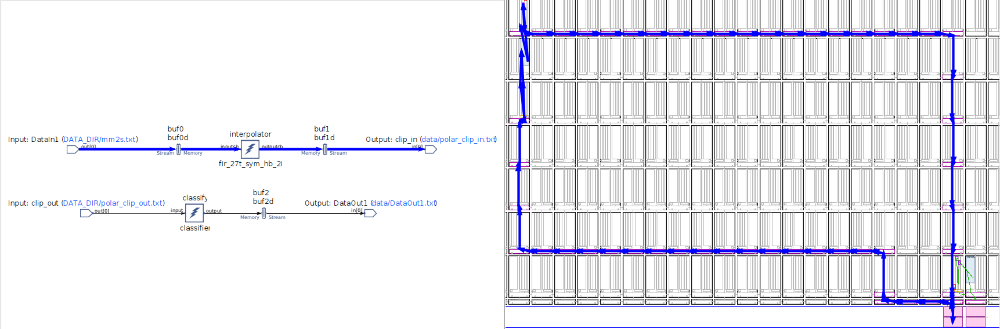
On the left of the array view, you can see the effect of the constraint on the placement of the kernel
interpolator. On the right, you can see the constraint implied by the platform itself.The kernel
interpolatorhas been constrained to be placed in the tile (5,5). In the previous phase, you saw that all the connections with the PL occurred within column 24 and 25. In this phase, these connections’ locations have been turned into a constraint. This is why you see long routes to connect the predefined PLIOs with the new location of theinterpolatorkernel.The ultimate goal of this phase is the hardware emulation of the global system (AI Engine array, PL, PS). The Xilinx Runtime library (XRT) is a key component of the Vitis software platform that enables developers to deploy on Xilinx adaptable platforms, especially Versal ACAPs. The PS application in this tutorial is based on XRT.
Start by creating an XRT domain. Double-click PostLinkPlatform / platform.spr. In the PostLinkPlatform project GUI, right-click PostLinkPlatform and select Add Domain. Enter the following parameters:
| Option | Value |
|---|---|
| Name | xrt |
| OS | linux |
| Bif File | /Your_Local_Install/platforms/xilinx_vck190_base_202210_1/sw/xilinx_vck190_base_202210_1/boot/linux.bif |
| Boot Components Directory | /Your_Local_Install/platforms/xilinx_vck190_base_202210_1/sw/xilinx_vck190_base_202210_1/boot |
| Linux Image Directory | /Your_Local_Install/platforms/xilinx_vck190_base_202210_1/sw/xilinx_vck190_base_202210_1/xrt/image |
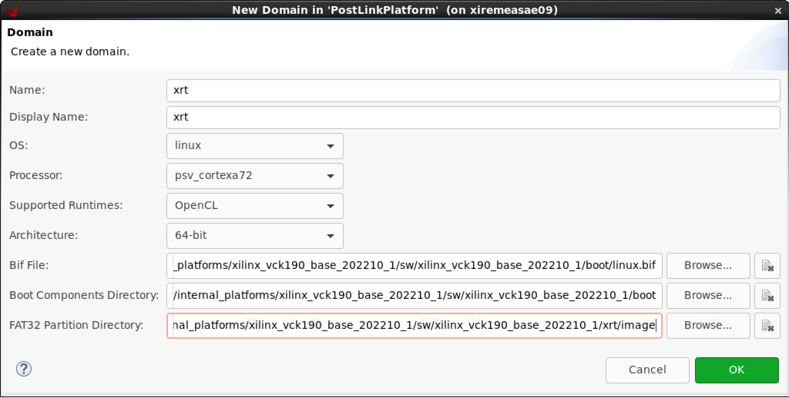
The XRT domain parameters are filled up automatically, but the Linux RootFS, sysroot directory, and all the QEMU parameters still need to be updated if they are not correctly specified:
| Option | Value |
|---|---|
| Linux Rootfs | /Your_Local_Install/common/xilinx-versal-common-v2022.1/rootfs.ext4 |
| Sysroot Directory | /Your_Local_Install/petalinux/2022.1/sysroots/cortexa72-cortexa53-xilinx-linux |
| QEMU Data | /Your_Local_Install/platforms/xilinx_vck190_base_202210_1/sw/xilinx_vck190_base_202210_1/qemu |
| QEMU Arguments | /Your_Local_Install/platforms/xilinx_vck190_base_202210_1/sw/xilinx_vck190_base_202210_1/qemu/qemu_args.txt |
| PMC QEMU Arguments | /Your_Local_Install/platforms/xilinx_vck190_base_202210_1/sw/xilinx_vck190_base_202210_1/qemu/pmc_args.txt |
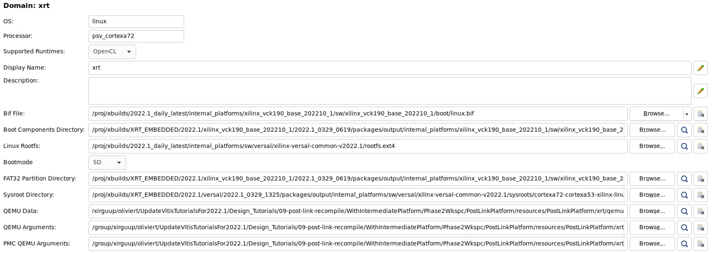
In Explorer view, right-click PostLinkPlatform and select Build project.
Create a new application. Right-click CoSim2_system and select Add Application project…. Provide the application project name: Cosim2_PS. By default, it is associated to the processor
psv_cortexa72_SMP, which contains thexrtdomain. On the next screen, specify the kernel image.
| Option | Value |
|---|---|
| Kernel Image | /Your_Local_Install/common/xilinx-versal-common-v2022.1/Image |
Select the Empty Application template to finish the application project creation. After this step, there is nothing required other than the standard operations to perform hardware emulation.
Import the sources. Right-click CoSim2_PS and select Import Sources. Navigate to PostLinkrecompile / Files / PS. Check PS, remove the trailing /src in the “Into folder:” edit area, and click Finish.
There is another file to import, which has been automatically generated by the AI Engine compiler:
Cosim2_AIE/Emulation-AIE/Work/ps/c_rts/aie_control_xrt.cc. It contains basic definitions related to the graph that are required during hardware emulation and hardware implementation. Copy it over to the directoryCosim2_PS/src.Right-click Cosim2_PS and select C/C++ Settings.
In GCC Host Compiler(…), select Dialect. For the language standard, select ISO C++ly(-stdc++1y).
In Includes, two paths need to be added:
${workspace_loc:/Cosim2_AIE/src}${env_var:XILINX_VITIS}/aietools/include
Finally, in the GCC Host Linker (…), select Libraries. In the library search path, add the following two paths:
${env_var:XILINX_VITIS}/aietools/lib/aarch64.o${env_var:XILINX_VITIS}/aietools/lib/lnx64.o
In Libraries, add the following two libraries:
adf_api_xrtxrt_coreutil
Click Apply and Close to finish the settings. Build the PS application CoSim2_PS.
Open the Cosim2_system project file and fill in the packaging option:
../../../Phase1Wkspc/CoSim1_AIE_system_hw_link/Emulation-HW/cosim_container.xsa. Build the system project CoSim2_system.Run the
hw_emusimulation. Right-click CoSim2_system and select Run As → Run Configurations. Double-click System Project Debug to create a new run configuration. Click the Edit… button beside the Program Arguments. The argument is the name of the XSA file: cosim_container.xsa. Uncheck the Automatically add binary container(s) to arguments option at the bottom of the window.Click Apply and Run, then click Start Emulator and Run. The simulation runs to the end, specifying at
(Step 8)(~2 minutes) that the simulation has passed.
Hardware Implementation¶
Replicate exactly the same flow for hardware implementation, changing the system target to Hardware to run the design on your VCK190 board. Select one of the following base platforms depending on your board:
xilinx_vck190_base_202210_1xilinx_vck190_es1_base_202210_1
When the two phases are completed, there will be a
sd_card.imgfile in theHardwaredirectory. Use a standard SD card imager with this file to initialize an SD card.Place the SD card in the top SD card slot of your board.
Open a serial terminal connected to the right COM port of your VCK190 and switch on your board.
The system boots. When this is finished, change the directory before launching the PS application.
cd /run/media/mmcblk0p1
./CoSim2.exe cosim_container.xsa
Support¶
GitHub issues will be used for tracking requests and bugs. For questions go to forums.xilinx.com.
License¶
Licensed under the Apache License, Version 2.0 (the “License”); you may not use this file except in compliance with the License.
You may obtain a copy of the License at http://www.apache.org/licenses/LICENSE-2.0
Unless required by applicable law or agreed to in writing, software distributed under the License is distributed on an “AS IS” BASIS, WITHOUT WARRANTIES OR CONDITIONS OF ANY KIND, either express or implied. See the License for the specific language governing permissions and limitations under the License.
XD039 | © Copyright 2021–2022 Xilinx, Inc.